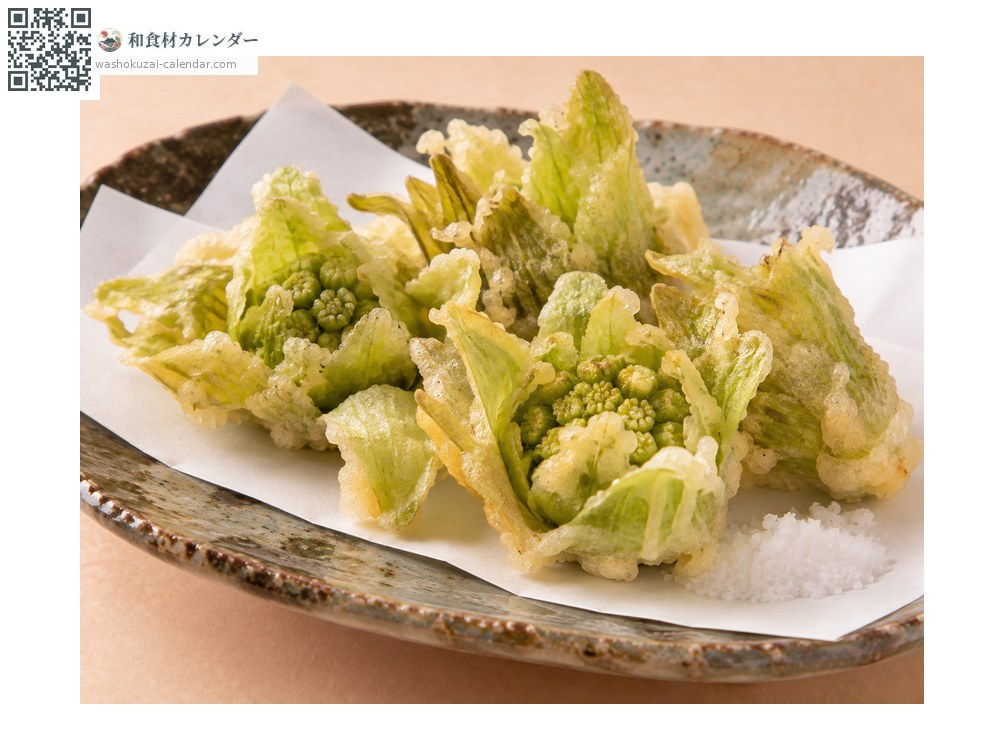
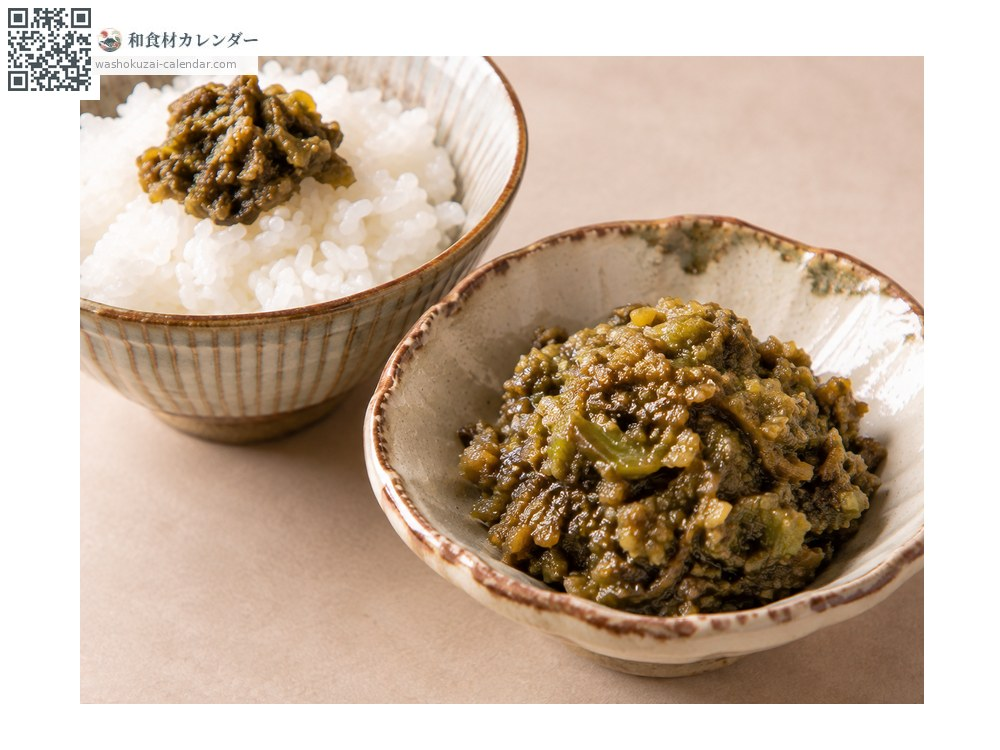
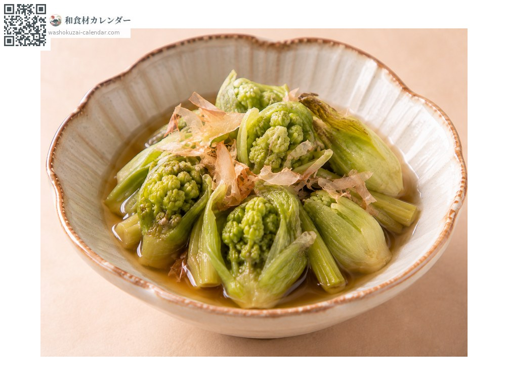
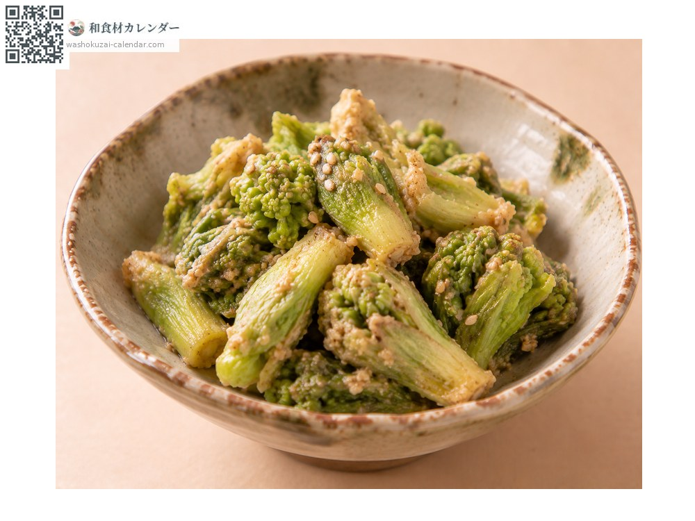

蔬菜
蜂斗菜花苞
ふきのとう ふきのとう fukinoto
别名fukinoto、fukinotou
应季时期为2月、3月

应季时期
1月
2月
3月
4月
5月
6月
7月
8月
9月
10月
11月
12月
应季有供应
烹饪方法

天妇罗
整颗油炸，苦味会变柔和、香气更突出。

蕗味噌
切碎与味噌拌炒，配饭或涂在田乐上。

烫青菜
去除涩味后浸在高汤里。

凉拌
做成芝麻拌或白拌，苦味与味噌很相配。
挑选方法
花苞紧实尚未绽开。绿色鲜艳且没有损伤。
保存方法
一旦绽开苦味就会变强。用湿纸包好冷藏并尽早使用。
主要产地
小知识
是蜂斗菜的花苞，随着融雪探出头来，是春天的使者。独特的苦味来自生物碱与多酚，被视为唤醒身体走出寒冬的味道。花苞一旦绽开苦味就会变强，所以要趁紧实时使用。